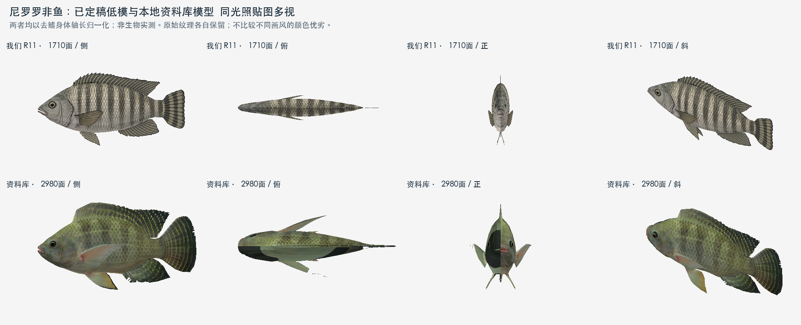
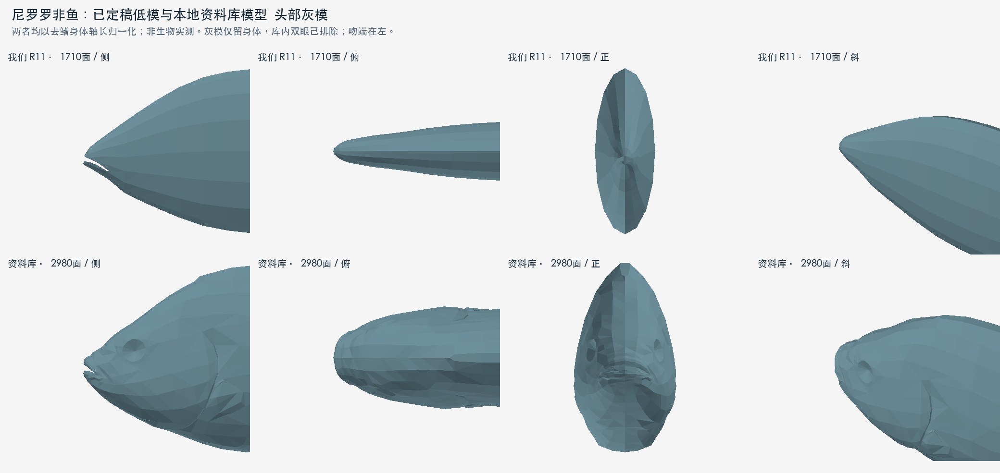

2026-11-02 · 一次本地查询、实际加载、多视与有限三角截面对照。生产模型保持原字节。
库内已有对应名称的完整模型，能查看嘴、头身厚度、七鳍布局及骨架结构。身体组中还包含两只独立眼球，排除后才量体宽。两者前吻横向轮廓差异明显，可作为后续造型讨论的依据。
我们的 R11 为1710面、18骨、7鳍；库内为2980面、26个蒙皮绑定。建法继续按项目原画与预算选择，不复制参考拓扑。库内模型名尚未核准生物学物种；比例只是模型造型事实。

使用相同光照与正交投影，nearest取样；这是软件对照图，未模拟原游戏shader或运行时动作。各自去鳍身体轴长归一化。

仅留身体，库内眼球已排除；口腔内部不用于外皮测宽。侧/俯/正/斜同时看，避免将眼球或侧影当作颅部厚度。
蓝：我们已定稿 橙：本地库参考
最大横宽/身体轴长：我们 0.1445，参考 0.2462。最大宽位置：我们 46.6%，参考 26.6%。
| 工程位置 t | 我们 W/L | 参考 W/L | 参考/我们 |
|---|---|---|---|
| 2% | 0.0411 | 0.1046 | 2.54× |
| 5% | 0.0594 | 0.1327 | 2.24× |
| 10% | 0.0771 | 0.1827 | 2.37× |
| 15% | 0.0887 | 0.2095 | 2.36× |
| 20% | 0.1027 | 0.2265 | 2.21× |
| 30% | 0.1274 | 0.2409 | 1.89× |
| 50% | 0.1436 | 0.2393 | 1.67× |
| 70% | 0.1170 | 0.1855 | 1.58× |
| 90% | 0.0559 | 0.1045 | 1.87× |
| 97% | 0.0227 | 0.0708 | 3.12× |
t由各自身体前后端定义，不是同名解剖测位。两模型尾柄终点、年龄、姿态与物种精度未完全配准；此表不作为自动放大头部的倍率，更不称生物实测。
数据库已经可以替代本轮重复搜索，为头吻包络、部位划分和方法选择提供可量取的参考。当前定稿不因与另一款游戏造型不同而自动修改；如后续采用某段比例，先按原画标嘴角、眼位、鳃盖、尾基，再制定逐鱼目标和复验范围。
实际源哈希、节点/蒙皮核对、完整499站、眼球排除及已知限制见 验证记录；复现脚本 只读生产模型，输出在本目录。UnityPy固定为1.25.4，临时安装到work目录；运行 .venv/bin/python output/fish-database-nile-trial-20261102/compare.py --deps work/fish-database-nile-trial-20261102/deps。